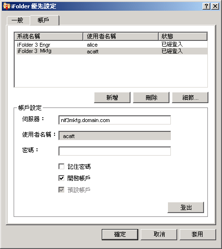

設定 iFolder 帳戶
您必須至少設定一個 iFolder 帳戶，才能在系統上建立 iFolder 或共用 iFolder。您只能為任何指定的主機電腦或伺服器建立一個帳戶，但您可以擁有多個帳戶。
具有不同的本地登入和使用者帳戶的使用者可在不同的時間登入到同一台電腦，並使用 iFolder 在各自的識別下建立自己的 iFolder 集。iFolder 只同步化使用中的使用者所屬的 iFolder。
-
使用下列其中一個方法來存取帳戶設定：
- 在安裝後第一次啟動 iFolder 時，iFolder 會提示您設定 iFolder 帳戶。按一下 「是」，直接進入「iFolder 優先設定」>「帳戶」索引標籤。
- 以滑鼠右鍵按一下「通知區域」中的 iFolder 應用程式圖示
 ，然後選取「帳戶」以開啟「iFolder 優先設定」對話方塊至「帳戶」索引標籤。
，然後選取「帳戶」以開啟「iFolder 優先設定」對話方塊至「帳戶」索引標籤。
-
按一下「新增」以存取「帳戶設定」區域。
-
請指定下列值：
參數 描述 伺服器
帳戶所在之 iFolder 企業伺服器的 DNS 名稱或 IP 位址。例如：svr21.example.com 或 192.168.1.1。
使用者名稱
輸入此帳戶的使用者識別。您的 iFolder 管理員會決定您應該使用的格式是您的網路使用者 ID (LDAP 公用名稱) 或電子郵件地址。
例如，如果您的姓名是 John Smith 並且使用者 ID 是 jsmith 而電子郵件地址是 john.smith@example.com，您的管理員就會為伺服器進行設定，該設定會決定要在「使用者名稱」欄位中使用這兩種格式中的哪一種，來進行驗證。
密碼
使用者名稱的密碼。
記住密碼
選取「記住密碼」可以在每次登入電腦時都自動登入到此 iFolder 帳戶。若需要更多資訊，請參閱登入 iFolder 帳戶。
如果您的網路密碼發生了變更，則下一次 iFolder 嘗試登入到 iFolder 帳戶時自動驗證理所當然就會失敗。iFolder 會提示您使用新密碼登入並且允許您指定並儲存這個新密碼。
開啟帳戶
選取「開啟帳戶」以允許對此帳戶的 iFolder 邀請、使用者清單及 iFolder 進行背景同步化處理。
預設帳戶
選取「預設帳戶」，使此帳戶成為在建立 iFolder 時帳戶下拉式清單中預設選取的帳戶。
 -
按一下「確定」或「登入」。
如果提示要求證書，則檢視該證書，然後按一下「確定」接受它。該帳戶就會出現在狀態為「登入」的帳戶清單中。iFolder 開始同步化該帳戶全部現有的 iFolder、iFolder 通知和使用者清單。
-
按一下「確定」，關閉「iFolder 優先設定」對話方塊。
-
使用下列其中一個方法為帳戶設定 iFolder：
- 如果 iFolder 可用於此帳戶，則會立現一條「iFolder 通知」訊息。按一下此訊息，以開啟「iFolder」對話方塊。請繼續進行設定可用的 iFolder。
- 如果沒有該帳戶的 iFolder，或如果您想立刻開始新增 iFolder，則以滑鼠右鍵按一下 iFolder 應用程式圖示，然後選取「iFolder」以開啟「iFolder」視窗。請繼續進行建立 iFolder。